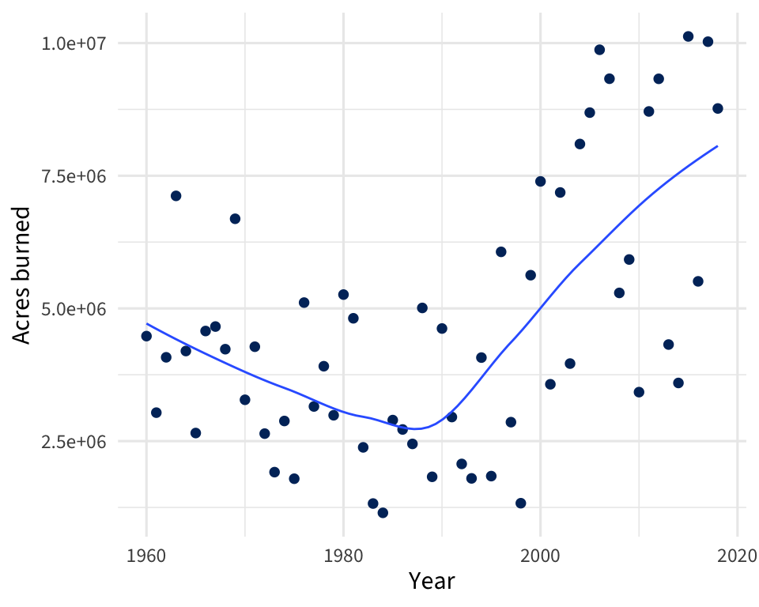
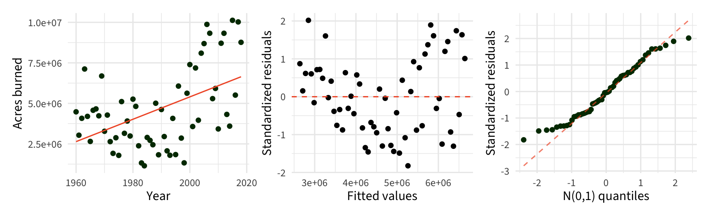
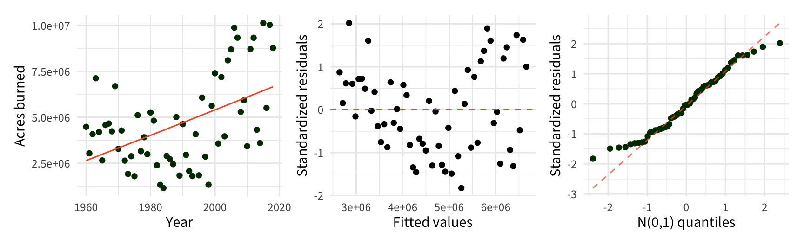
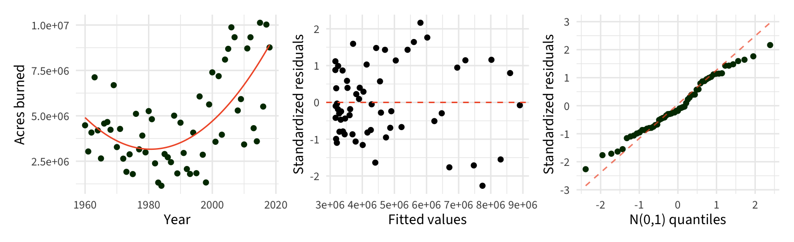
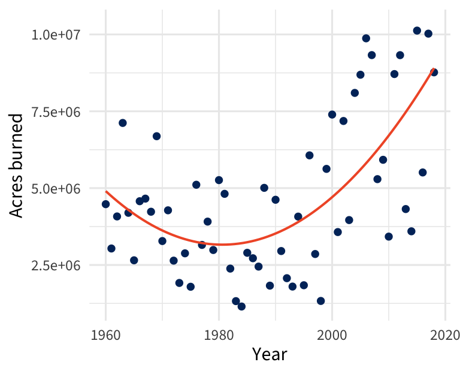
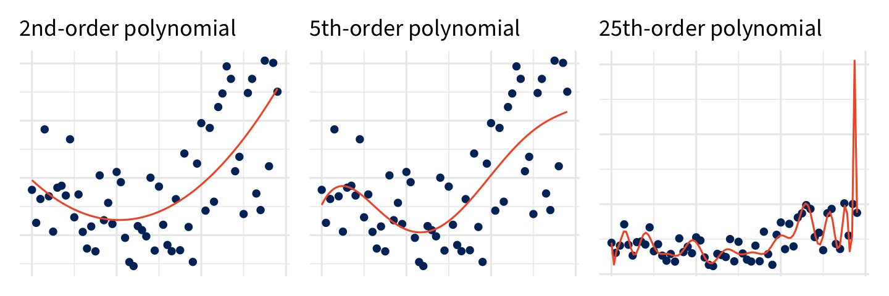
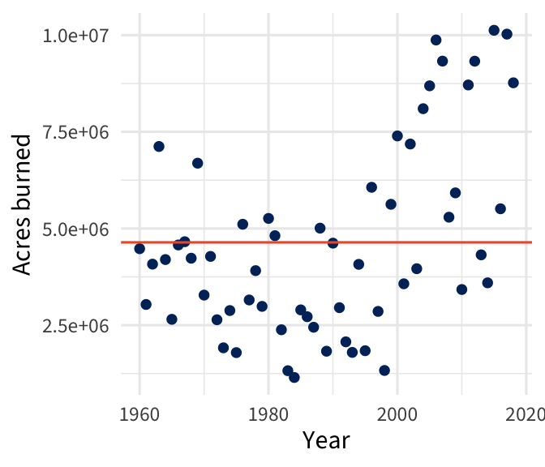
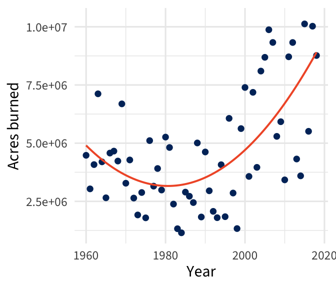
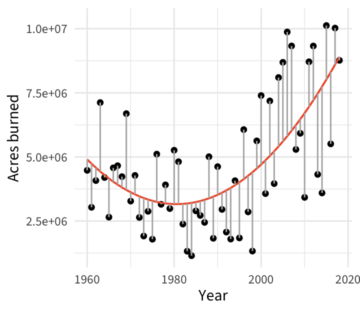

gf_point(Acres ~ Year, data = wildfires, color = "#003069") %>%
gf_labs(x = "Year", y = "Acres burned") %>%
gf_smooth(size = .5)
Day 07
The National Interagency Coordination Center at the National Interagency Coordination Center compiles annual wildland fire statistics for federal and state agencies.
This information is provided through Situation Reports, which have been in use for several decades.
Our goal is to model the number of acres burned over the years
gf_point(Acres ~ Year, data = wildfires, color = "#003069") %>%
gf_labs(x = "Year", y = "Acres burned") %>%
gf_smooth(size = .5)
\(\mu \lbrace y | x \rbrace = \beta_0 + \beta_1 x\)
Is the fit reasonable?

\(\mu \lbrace y | x \rbrace = \beta_0 + \beta_1 x^2\)
Is the fit reasonable?

\(\mu \lbrace y | x \rbrace = \beta_0 + \beta_1 x + \beta_2x^2\)
Is the fit reasonable?

\[Y_i = \beta_0 + \beta_1 x_{i} + \beta_2 x_{i}^2 + \cdots + \beta_k x_{i}^k + \varepsilon_i, \quad \varepsilon_i \overset{iid}{\sim} N(0, \sigma)\]
Assumptions — same as in SLR
\(\mu\{Y|x_i\}\), is a linear function
For each \(x_i\), the sub-population of responses is normally distributed
The standard deviation for each sub-population is \(\sigma\)
Independent observations

Focus on the expected change in \(y\) for a specific increase in \(x\)
e.g. change in acres burned from 1985 to 1990
e.g. change in acres burned from 2005 to 2010
Inference uses the same t-based tools as SLR, but with
\[\widehat{\sigma} = \sqrt{\dfrac{{\sum_{i=1}^n e_i^2}}{n - (k+1)}}\]
i.e. the degrees of freedom of the t-distribution change
Hypotheses: \(H_0: \ \beta_j = \#\) vs. \(H_a: \ \beta_j \underset{>}{\overset{<}{\ne}} \#\)
. . .
Test statistic: \(t = \dfrac{\hat{\beta}_j - \#}{SE(\beta_j)}\)
. . .
Reference distribution: \(t\) distribution with d.f. = \(n-(k+1)\)
p-value: Area in the tail(s) specified by \(H_a\)

\(\widehat{\beta}_j \pm t^*_{n-(k+1)} \cdot SE(\widehat{\beta}_j )\)
. . .
| Term | Estimate | SE | Lower | Upper |
|---|---|---|---|---|
| (Intercept) | 16109806404 | 3793719340 | 8510073345 | 23709539462 |
| Year | -16264428 | 3814896 | -23906583 | -8622273 |
| I(Year^2) | 4106 | 959 | 2185 | 6027 |
Would a higher-order polynomial (e.g. cubic, quartic, quintic) provide a better fit to the wildfire data?
Work through that example on the handout with your neighbors
Prior to 1983, sources of these figures are not known, or cannot be confirmed, and were not derived from the current situation reporting process. As a result the figures prior to 1983 should not be compared to later data.
— NIFC
High-order polynomial regression models will over-fit your data (i.e. pick up on peculiarities specific to your one sample from the population)

Use the mean of Y as the prediction for all observations
\(\mu \lbrace Y | X \rbrace = \beta_0\)
Leaves a lot of variability unexplained

\(SD(Y) = 2.465548\times 10^{6}\) cm
\(\mu \lbrace Y | X \rbrace = \beta_0 + \beta_1x + \beta_2 x^2\)
Using a predictor explains more variability

\(SD(\varepsilon) = 1.9098377\times 10^{6}\) cm
\({\rm SSTotal} = \sum(Y_i - \bar{Y})^2\)
Measures the overall variability in \(Y\)

\({\rm SSResidual} = \sum(Y_i - \widehat{Y}_i)^2\)
Measures the variability unexplained by the model
Equal to \(\widehat \sigma\)

Measures the variability explained by the model

\({\rm SSRegression} = SSTotal - SSError\)
Proportion of the total variation in \(y\) explained by the linear regression model

\(\begin{split} R^2 &= 0.421\\ &= \dfrac{SSRegr}{SST} \\ &= 1 - \dfrac{SSE}{SST} \end{split}\)
\(R^2\) only addresses how close the fitted values are to the data, on average. It says nothing about the validity of the model.